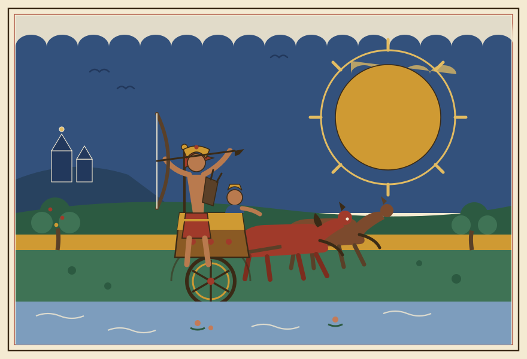

Folio I · The Opening Leaf
An epic is not a skin. It is a library you borrow from — carefully.
I draw the great epics for games: character turnarounds, environment plates and key art for studios adapting the Ramayana, the Mahabharata and the regional epic traditions. Every design is read from the source first, drawn second, and passed through the studio’s cultural review before it is allowed to ship.
- 7titles shipped
- 342assets delivered
- 41review gates passed
- 6designs refused in review — counted as discipline, not failure
- 0deadlines met by skipping a gate
Folio II · The Working Leaves
The Asset Production Planner
Studios ask two questions first: how long? and what will it cost? Both are answered from the tables printed on this leaf — the tool below reads the same numbers you are reading, so the arithmetic can be checked line by line. Hours include the revision rounds stated; a working week is 32 production hours (the rest of the week is review gates, source reading and studio calls, and pretending otherwise is how schedules lie).
| Asset class | What the set includes | Revision rounds included | Hours |
|---|---|---|---|
| Character turnaround set | Front, profile and back views, expression sheet, colour script | 2 | 46 |
| Environment plate | One location, one time of day, layered source file for parallax | 2 | 30 |
| Key art | One hero composition, delivered with poster and store crops | 3 | 58 |
| Sprite & icon batch | 12 finished sprites or icons in one family, one palette | 1 | 18 |
The printed rule of this folio: when a scope lands after the ship window, the honest answers are the only two — cut assets, or add a second artist. The date does not move to meet the drawing, and no gate is skipped to save a week.
Count the scope
Set the asset counts. The workings below are printed line by line from Table A.
The workings, printed
Folio III · The Price of the Work
What moves the price
Two things move a price here, in this order: asset count and revision rounds beyond the ones included. A compressed deadline moves it third — a second artist is a real cost, charged as one. Cultural review sessions are booked by the studio and charged at cost of the session; they are never a profit line and never optional on sacred figures. The rates are printed in full, because a price you cannot check is a price you should not pay.
| Line | Basis | Rate |
|---|---|---|
| Character turnaround set | Per set, rounds as in Table A | ₹68,000 |
| Environment plate | Per plate, rounds as in Table A | ₹44,000 |
| Key art | Per piece, incl. poster and store crops | ₹92,000 |
| Sprite & icon batch | Per batch of 12 | ₹26,000 |
| Extra revision round | Per asset, per round beyond the rounds included | ₹9,500 |
| Cultural review session | Per consultant-led session, booked by the studio | ₹14,000 |
The booking estimator
An estimate at the printed rates — a starting figure for a conversation, not a quote dressed as one. The signed brief is the quote.
The estimate, printed
Folio IV · The Register of Services
Services, with the role stated
One artist can hold three different jobs on three different titles — character artist here, key art only there, art direction nowhere unless it says so. The register states the role per engagement, because a credit you have to guess at is a credit being blurred.
| Service | Client type | Title | Status | My role |
|---|---|---|---|---|
| Character design & turnarounds | Mid-size RPG studio, Pune | Kurukshetra: Ashes of the Dice | Shipped, 2025 | Character artist — 14 of 19 turnaround sets |
| Environment plates | Narrative adventure studio, remote | The Forest Years | In production | Environment artist — all 9 plates |
| Key art | Strategy studio, Hyderabad | The Dice King’s Fall | Shipped, 2024 | Key artist only — art direction by the studio’s AD |
| Sprite & icon batches | Mobile RPG studio, Bengaluru | Vanavaas Tactics | Shipped, 2023 | Production artist — icon family and item sprites |
| Character design & turnarounds | Indie studio, two-person team | The Bowstring | Booked — starts at the next window | Character artist — full cast of 6 |
Folio V · A Word From the Studio
“Kavya returned two of her own designs at our cultural review before we could — she had read the episode more carefully than our brief had. The Archer’s turnaround set is the first asset our players ever framed and hung on a wall. That is not a compliment I give production art often.”